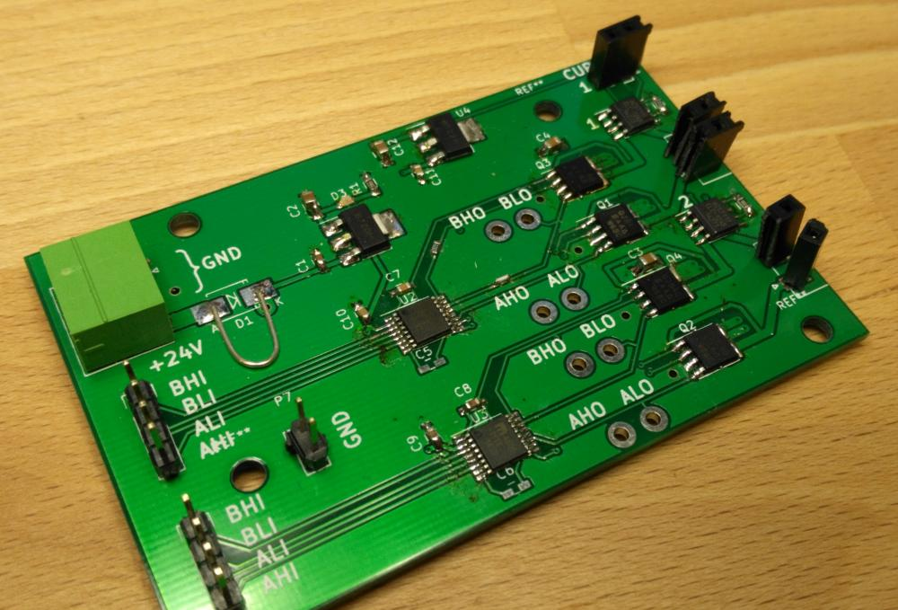
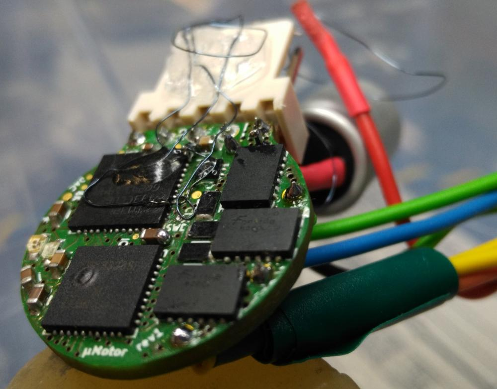
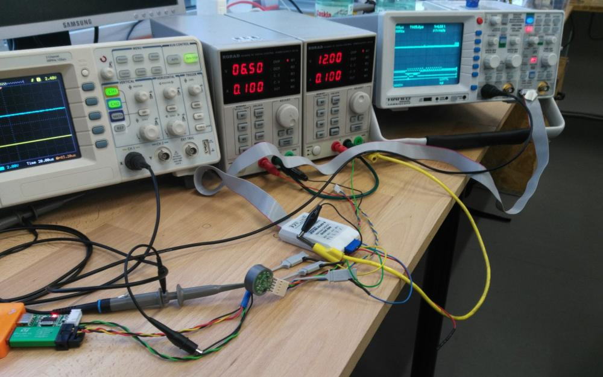
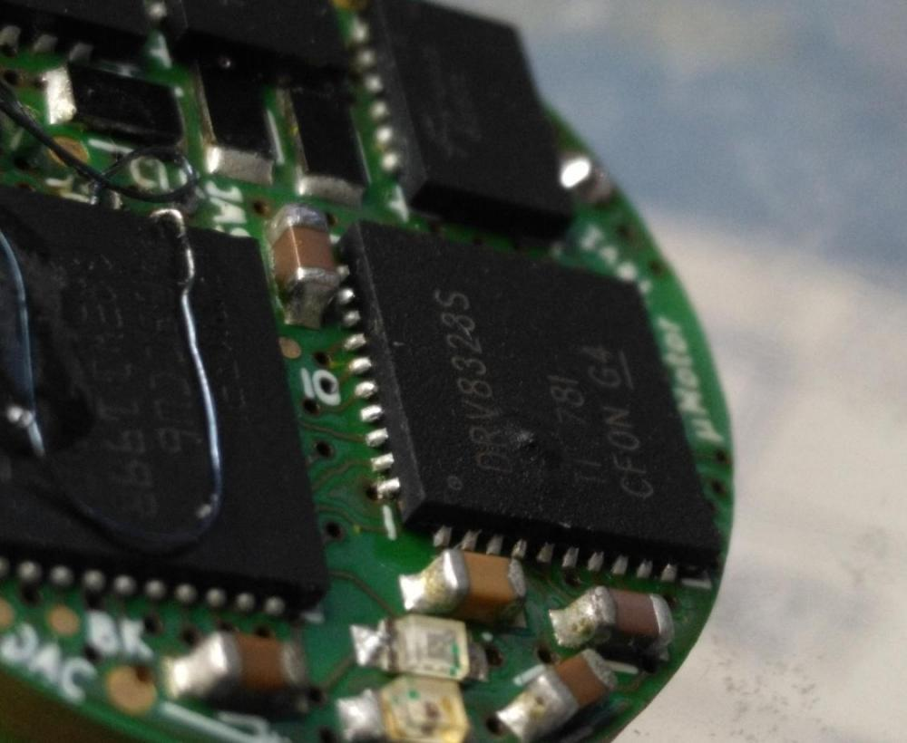
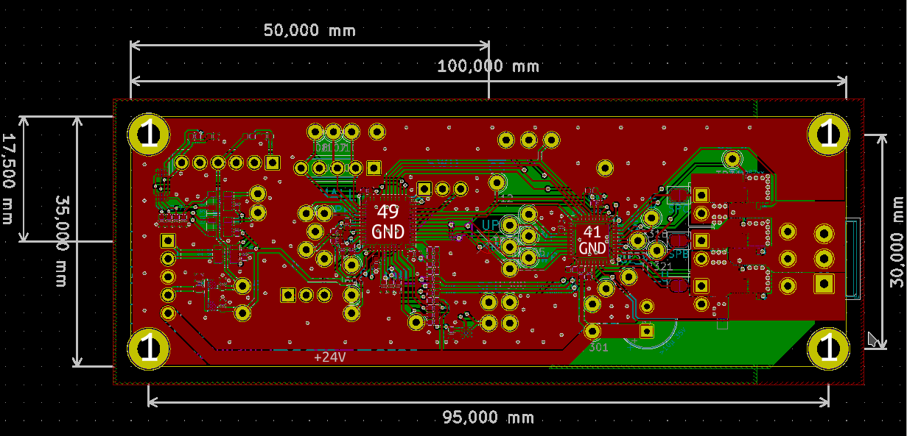

Die Idee zur Entwicklung des µMotors ist schon älter. Damals, als die Auswahl der Komponenten noch geschah, wurde im RCA fast zeitgleich auch der größere Bruder des µMotors, der Alpha-Motor, entworfen.
Beim Design der Leistungselektronik fiel die Wahl des MOSFET-Gatetreibers auf den MIC4606 in Kombination mit den SQJB40EP MOSFETs von Vishay. (Vielen Dank an dieser Stelle an Vishay für das unkomplizierte und schnell zur Verfügung stellen von Samples.)
Um die Eignung der ausgewählten Komponenten zu verifizieren wurde eine Testplatine entworfen, welche außerdem eine schöne und lehrreiche Aufgabe für zwei neue, bisher nicht mit dem Platinendesign vertrauten Mitgliedern des Roboterclubs darstellte. Die Testplatine enthielt neben den MOSFET-Treibern und MOSFETs selbst nur Stecker, Testpunkte, die nötige passive Beschaltung aus Widerständen und Kondensatoren sowie die Spannungsversorgung.

In Kombination mit einem Entwicklungs-Board für Microcontroller, in unserem Fall das [STM32F4Discovery], wurde die Ansteuerung von DC und BLDC Motoren erfolgreich getestet.
Dadurch wurde der MIC4606 Chip für den Alpha-Motor ausgewählt und war auch für den Micro-Motor vorgesehen. Im Laufe der weiteren Komponentenauswahl für den Micro-Motor stellten sich die mechanischen Dimensionen des Chips allerdings als zu groß heraus und der DRV8323 Gate-Treiber bot einen insgesamt kleineren Footprint. Der Chip selbst ist größer (6x6mm² WQFN zu 4x4mm² QFN), allerdings wird deutlich weniger externe Beschaltung (u.A. keine Gate-Serienwiderstände, keine Bootstrap-Kondensatoren) benötigt und drei Strommessverstärker sind direkt integriert.
Der DRV8323 ist zugleich auch wesentlich komplexer als des MIC4606, statt einer Bootstrap-Schaltung zur Ansteuerung der High-Side-MOSFETs integriert der Chip eine Ladungspumpe und viele Parameter wie Gate-Serienwiderstände, Überstom-Abschaltung und die integrierten Strommessverstärker lassen sich beim DRV8323 digital über ein SPI-Interface konfigurieren.
Trotzdem wurde es nicht als nötig erachtet für den DRV8323 Chip eine simple Testplatine zu entwerfen, was sich im Verlauf als Fehlentscheidung herausstellte.
Nervig wurde die Situation bereits beim Schreiben des modm.io-Treibers. Es ist meist hilfreich mit einem Logic-Analyser oder Oszilloskop de SPI-Bus auf der Platine an Testpunkten abgreifen und beobachten zu können. Leider passten auf die Platine des Micro-Motors keine Testpunkte, manche der Leiterbahnen waren nicht einmal auf zugänglichen Außenlagen der Platine, sondern ausschließlich unter Chips und auf den Innenlagen geführt. Somit musste filigraner Fädeldraht an die kleinen Lötperlen an den Außenkanten der QFN/DFN-Pads des Chips anlöten werden um an diesem Fädeldraht dann die Signale mit Logic-Analyser und Oszilloskop ab zugreifen.

Dabei wurde das erste Problem recht schnell deutlich: Die MISO-Leitung des DRV8323 ist ungewöhlicherweise als Open-Drain und nicht wie üblich als Push-Pull-Stufe ausgeführt, infolgedessen wird ein externer Pull-Up-Widerstand benötigt. Um diesen Widerstand einzusparen sollte der intern zuschaltbare Pull-Up Widerstand im STM32 Microcontroller genutzt werden. Leider ist der Widerstand dieses Pull-Ups (laut Datenblatt 30 Kiloohm bis 70 Kiloohm viel zu groß für die minimal konfigurierbare SPI-Frequenz (mehrere 100kHz) des STM32L433 Microcontrollers. Folglich musste neben dem Fädeldraht für die Messinstrumente noch ein 10 Kiloohm Pull-Up-Widerstand mit Fädeldraht nachgerüstet werden. Das Löten war schon fast zur Routine geworden, da sich der Fädeldraht in der Zwischenzeit mehrfach gelöst hatte.

In Endeffekt hat die vorhandene Hardware aber ihre Inbetriebnahme und die Software-Entwicklung unter Zusatzaufwand ermöglicht.

Bis letzte Woche ein merkwürdiges Verhalten der PWM-Waveform bei der Ansteuerung von BLDC-Motoren auftrat. Zum lokalisieren des Fehlers wurden neben den Signalen an den Motorphasen auch die Signale der Gates vor und nach dem Gatetreiber betrachtet. Auch diese Signale sind nur an den seitlichen Pads von QFN-Chips ab zugreifen. Der Pad-Pitch beträgt hier 0,5 mm, also etwa gleich dem Durchmesser des Spitze der Oszilloskop-Probe. Natürlich rutschte die Spitze ab und verursachte einen Kurzschluss, welcher vom Gatetreiber mit erhöhten Stromverbrauch und Rauchentwicklung quittiert wurde.
Schnell war die Entscheidung getroffen um weitere Zerstörung zu verhindern nun doch eine Testplatine für den DRV8323-Chip zu konstruieren.
Da es für den verwendeten Microcontroller kein Entwicklungs-Board vom Hersteller gibt wurde dieser integriert, der Schaltplan ist daher fast identisch mit dem des Micro-Motors. Die Platinengröße wurde von einem Kreis mit Durchmesser von 20 mm auf ein Rechteck von 100 mm x 33 mm erweitert um Platz für die etwa 50 Testpunkte zu bieten.

Der Name ist entsprechend auch nicht weit von Micro-Motor entfernt gewählt: Macro-Motor.
Dank der schnellen Platinenfertigung von Aisler reicht eine gute Woche Wartezeit aus, bis die neue Testplatine in unserer Werkstatt liegen wird.